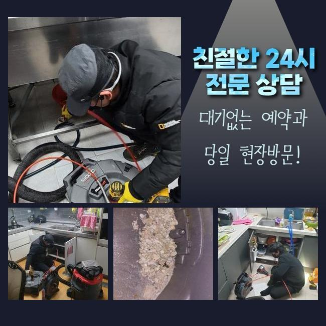
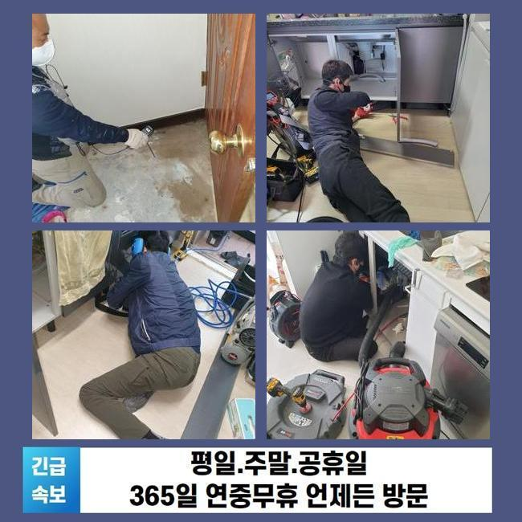
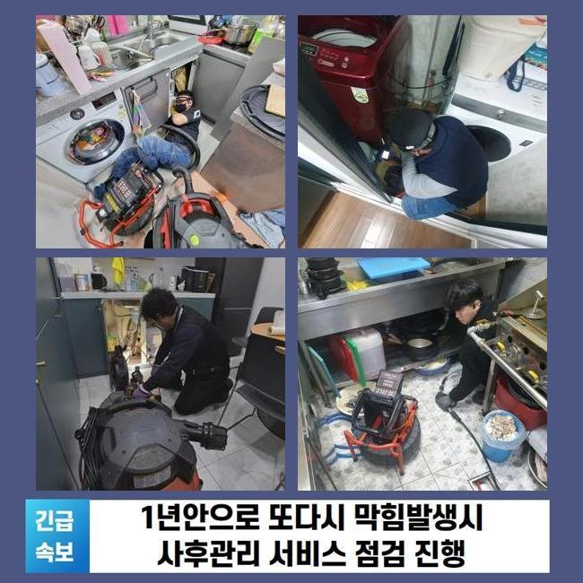
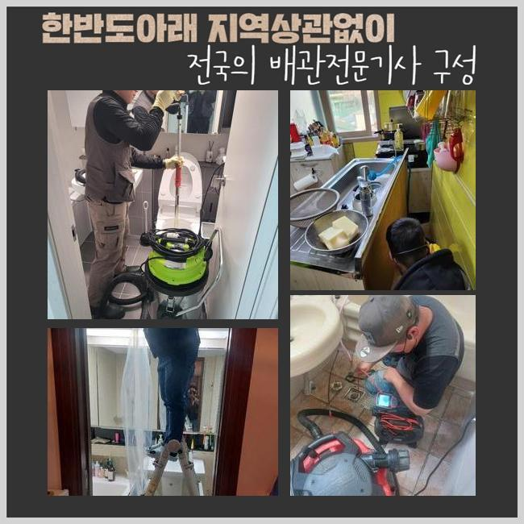
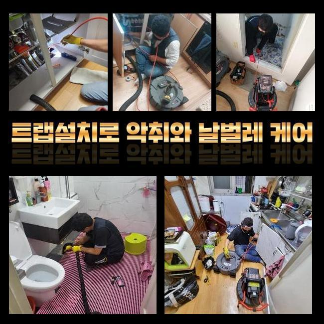
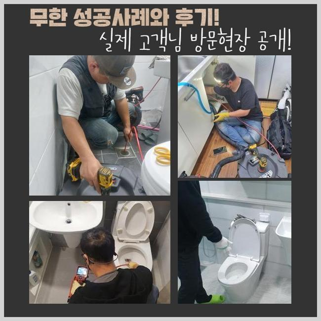
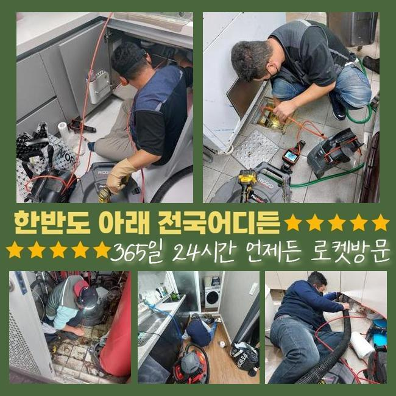

🏠 일산 주엽동오수관역류 구산동 배관뚫기 누수탐지
용인 배관막힘 전문 시공 후기

📋 작업 개요
- 위치: 용인
- 서비스 유형: 배관막힘, 누수수리, 역류해결, 뚫는업체, 배관청소, 고압세척, 설비공사, 악취차단
- 작업 일시: 2025. 4. 8. 13:23
- 업체명: 하수구수사대 (010-5615-2118)
🔍 문제 상황
일산 주엽동오수관역류 구산동 배관뚫기 누수탐지
금일은 아파트에서 우수파이프가 정체되어서 역류증세가 나타난다는 의뢰를 받게되었는데요
비가 내리면 우수파이프로 흘러나가야 함에도 외려 넘치는 바람에 주변환경이 더러워지고 습한기운도 심해졌다고 설명하셨어요
2~3개월 이전에도 이와 동일한 정황을 본적이 있었으며 최근 일주일간 강우량이 많았기에 더욱 악화된거라고 말하셨답니다
이때문에 단지내에 고약한 냄새가 퍼지게되었고 주민분들의 불편함도 증가하게 되었던거죠
관리를 즉시 실행해달라 요청하셨고 저희팀은 재빠르게 장비들을 챙기기 시작했답니다
현장의 주소지를 파악해보니 10분도 안되는 곳에 위치한 곳이었답니다
손님분에게 즉시 고쳐드리겠다고 설명드리고 도구들을 챙긴뒤에 출발하게 되었어요
현장쪽에 가보니 분리수거장 근처에 우수파이프가 보였어요
앞에서 체크해보니 물이 넘쳐흐른 자국이 많았고 앞에서 체크해보니 이를 치우기위한 마대자루와 집게 등이 마련되어 있더라고요
역류증상이 심각해지면서 경비직원분들께서 수시로 그것들을 정리해나가셨다고 하십니다
하지만 형편은 해결되지 않았으므로 즉각 수리를 원하셨죠

🔎 원인 분석
💡 전문가 진단: 정밀 진단 장비를 사용하여 슬러지의 고착 여부를 판명하고 타격/세척 작업을 실시했습니다.
우수배관은 낮은위치로 비가 집중될수 있게 시설되어야 마땅하지만 이 현장은 주변부와 유사하게 건설이 마감되어 역류문제가 늘어나게 된거였죠
이것들을 처리하려면 대형공사를 해야했으나 고객님에게서는 그 부분은 추후에 논의하기로하고 우선 뚫음부터 해달라고 요청토로하셨죠
우수설비의 막힘양상을 직접적으로 조사해보니 돌멩이들도 많았으나 물티슈와 같은 찌꺼기들도 상당했답니다
그로 인하여 우수배관이 차단되었고 역류가 일어날 수준으로 정황이 악화된것이죠
이에 대해 가정내에서 우수관쪽으로 오물을 내려보낼수 있는지 여쭤봤는데요
저층세대의 베란다에서 활용하신다고 하네요
해당 문제들에 관해 수시로 주의말씀을 드렸지만 온당하게 수행되지않는 상황이라 말하셨답니다
그러한 상황이 계속된다면 거듭해서 역류가 생겨나기 쉽다는걸 설명하였고 방예대책을 세우기고 하셨답니다
우수시설을 열어봤더니 하수가 적절히 빠지지 않았다는게 바로 파악되었죠
배수시설 주위에 오염물질들이 너무 많아서 작업에 돌입하기 어려웠답니다
거기에 더해 관로속에 들어간 노폐물이 상당하고 부피도 컸기에 간소한 장비로 처치하기엔 역부족이었습니다
따라서 저흰 스프링장비를 동원하여 빠르게 정비하는 대책을 시작했어요
우수관주변이 넓지 않았고 비까지 내려 시공에 어려움이 있었는데요

🔧 작업 과정
그런 상황에서도 의뢰인분의 괴로움을 최소화시키기 위하여 바로 공정을 시작했죠
내시경카메라는 우수관로 내측을 관찰하고 이물의 양을 확인하는데 정말 중요한 기능을 수행해요
이것으로 우수관로 안의 상태를 분명하게 밝혀내고 통수시간을 줄였답니다
그리고 스프링관통기를 이용하여 배관을 소제하는 시공이 시행되었고요
우수관로의 사이즈가 작은 경우에 배수구망이 없기에 이물질들이 쉽게 유입되는 일이 왕왕 발발하죠
그러고나서 잔존물들이 누적되고 결과적으로 관로정체가 빚어져서 역류증세가 생겨나거나 해충들이 꼬일 가망성도 올라가게 됩니다
그것들을 미연에 막으려면 자주 내부청소를 시행해야 하며 나뭇잎 등이 침투못하게 배수구망을 걸어두는 작업도 필요해요
그것들과 관련해서 의뢰자님께 설명드렸고 특별히 사용량이 많은 곳일수록 더더욱 주의를 기울여야한다는 것을 강조해 드렸죠
세척을 시행할 때에도 관로 안쪽에 균탁이 생겼는지 물이 새는 부분은 없나 확실하게 조사하였답니다
이를 통해서 예상치못한 문제점을 방예하고 주민들의 안녕을 만들어드릴수 있답니다
어지간한 이물들을 없앤뒤에도 관로에는 아직 잔류물질이 상당량 체류하고 있었죠
그것을 처리하려 샤프트분쇄기를 적용하였습니다
샤프트장비는 재빠르게 움직이는 체인을 활용해서 관로에 적체된 노폐물을 파쇄하는 역할을 수행하고 강인한 파워로 효율적으로 이물들을 세척해낼수 있답니다
또 배수관을 긁어내지 않아 안심하고 쓸수 있는 장점을 가지고 있어요
때마침 가랑비가 멈췄고 바닥부근에 있던 물기를 처치하려 석션기기를 통해 업무를 마무리하게 되었어요
샤프트기기로 분쇄한 성분을 반복적으로 흡입기기로 청소하며 정체문제를 완벽하게 해소하게 되었네요
주민들의 불편함을 최소화시키기 위하여 끝까지 최선을 다해 시공을 하니 배수관은 이전과같이 우수가 흐르게끔 뚫렸죠
이를 통하여 깔끔한 우수배관을 보존하는 업무가 불가결한 일이라는걸 거듭하여 인지시켜 드렸어요
관로가 정체된다면 간단히 불편리가 생기는걸 넘어 더더욱 커다란 사태로 연결될수 있어서 주기적으로 정비해나가야 한단 사실을 재차 강조드립니다
더군다나 여기는 배수처리 장소의 높이자체가 높았기 때문에 한층 자주 손봐야한다는 내용도 설명해 드렸어요


✅ 작업 완료
고객께서는 배관 내시경 이것으로 세척된 결과물을 즉각적으로 파악할수 있으셨으며 마지막에는 빗물을 흘려보내 테스트를 진행하였어요
위와 같은 수순으로 아파트단지 안의 우수시설물의 정체를 해결하였고 물이 넘치는 증세도 완벽히 없어졌죠
신경쓰기 까다로운 우수파이프나 횡주관로의 정체상황도 경험많은 담당자를 통하여 세세히 조사하고 해결해나가시길 바랍니다
고객님들의 가정에 항시 정상적 기능이 유지되길 바라요
혹시 막힘이 감지된다면 망설이지말고 전화해주세요 신속하게 이동하겠습니다




⚠️ 베란다 누수 및 방수 관리 방법
- ✅ 비가 많이 올 때 창틀 주변이나 아래층 천장에 얼룩이 생기는지 정기적으로 확인해 보세요.
- ✅ 우수관 주변 실리콘 마감이 들뜨거나 깨진 틈새가 있는지 손상 여부를 수시로 체크하세요.
- ✅ 베란다 바닥 타일의 줄눈(메지)이 소실되면 그 틈으로 물이 침투하여 누수가 유발됩니다.
- ✅ 누수 의심 증상 발견 시 방치하면 아래층 손실이 커지므로 즉시 전문가의 진단을 받으십시오.
💡 핵심 정리
- 확실한 장비 작업(내시경 점검 및 샤프트 스케일링)으로 원인을 뿌리 뽑습니다.
- 작업 후 1년 이내에 동일한 부위 재발 시 100% 무상 A/S 서비스를 보장합니다.
- 서울 · 경기 · 인천 전 지역에 24시간 언제든 긴급 출동할 수 있도록 항시 대기 중입니다.
❓ 자주 묻는 질문 (FAQ)
🚨 용인 배관막힘 문제로 고민이신가요?
정확한 원인 진단과 확실한 시공으로 재발 없는 해결을 약속드립니다.
24시간 긴급 출동 | 서울 · 경기 · 인천 전지역 | 1년 내 재발 시 무상 A/S